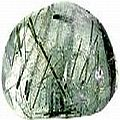

Transporte do fluido dentinal - teoria revolucionária sobre resistência natural à cárie e cariogênese
Pesquisa dos Drs. Steinman & Leonora pressupõe a resistência do hospedeiro como mais importante que as bactérias como causa primordial de deterioração dentária.
Enquanto que o consenso oficial sobre a causa da deterioração dentária aponta o dedo para bactérias orais, placa e ácidos concomitantes como os agentes causadores na formação de cáries, uma minoria de pesquisadores tem perseguido um caminho diferente – e altamente promissor.
Os dentes – vítimas indefesas de um ambiente bucal destrutivo?
Pesquisadores independentes sobre a etiologia da cárie dentária iniciaram a partir da observação de que o corpo está equipado sofisticados mecanismos de defesa que lhe permite quebrar invasores e influências destrutivas e assim preservar a saúde de todos os seus outros órgãos. Por que os dentes não teriam também um mecanismo embutido de auto-defesa?
O fornecimento de sangue é a principal via pela qual todos os órgãos são nutridos e defendidos e uma causa principal de doença e mau funcionamento está restrita ao fornecimento de sangue. Nos dentes, o suprimento de sangue termina nos capilares que estão dentro da polpa dentária e tem sido observado que o suprimento sanguíneo restrito para os dentes, aumenta a deterioração dentária.
Dr. Ralph R. Steinman, DDS, MS, professor de medicina oral na Universidade de Loma Linda, com a importante assistência da Dra. John Leonora, professora de fisiologia e biofísica, com especialização em endocrinologia, são dois renomados cientistas que conduziram pesquisa extensiva e revolucionária sobre a verdadeira etiologia da cárie dentária, baseados na suposição de um mecanismo de auto-defesa existente nos dentes.
Nota: Tristemente, a maior parte da pesquisa do Dr. Steinman sobre o sistema de transporte do fluido dentinal e a etiologia da cárie foi conduzida em ratos e também num menor número de coelhos e porcos1. Entretanto, um pequeno número de estudos realizados em dentes humanos extraídos confirmou suas descobertas anteriores em animais. Nas palavras do Dr. Steinman, “ Todo processo bioquímico de deterioração [dentária] identificado no homem é verificado como sendo idêntico no rato. A única diferença entre os dois é a velocidade da reação.” [que não é de surpreender levando-se em conta a grande diferença na duração de vida]
Embora os dois cientistas tenham frequentemente apresentado seu trabalho como uma teoria a ser corroborada por posterior pesquisa em seres humanos, considerando a extensiva evidência apresentada, CuraDente.com considera que os resultados da pesquisa dos Drs. Steinman sobre o papel do transporte do fluido dentinal, o eixo glandular hipotálamo-parótida, a dieta alta em sucrose, etc. sobre a causa e prevenção de cárie dentária em ratos como sendo diretamente aplicável em seres humanos.
Os dentes PODEM e SE DEFENDEM: o papel central da “resistência do hospedeiro”.
Os Drs. Steinman and Dr. Leonora realmente demonstraram – por meio de mais de cem estudos realizados em quase dez décadas - que os dentes são capazes de rechaçar influências externas nocivas e intrusos (tais como bactérias contaminantes que vivem de restos de alimentos que produzem ácidos). Essa defesa ocorre por meio do “fluxo de fluido tubular dentinal”, um movimento contínuo de líquido intersticial que flui da polpa dentária para fora pelos túbulos dentinais e esmalte, para a boca.
É apenas quando esse “sistema de transporte de fluido dentinal” funciona mal devido a várias causas e por vários caminhos, que um dente sucumbirá à cárie. Nesse cenário, bactérias cariogênicas são simples espectadores que tiram vantagem de uma condição de resistência enfraquecida que os permite invadir e “conquistar” um dente. Isso é um reminescente do vislumbre atribuído a Pasteur, no seu leito de morte, que parece ter admitido que “é o terreno, não o germe, que causa a doença.”
Descoberta e demonstração do sistema de transporte de fluido dentinal
Como qualquer dentista aprenderá na faculdade de odontologia, os dentes estão longe de serem estruturas sólidas. Ao invés disso, eles consistem numa série de túbulos dentinais e de varetas de esmalte (veja ilustrações altamente ampliadas de dentina) como também da polpa, que é ricamente suprida de vasos sanguíneos, nervos, odontoblastos produtores de dentina2 etc.
Intrigado por alguma da literatura antiga a partir dos anos 1880 sobre pesquisa que mostrava que os dentes podem, em verdade, apresentar um mecanismo de auto-defesa contra cáries dentárias, o Dr. Steinman decidiu explorar a teoria. Nesse sentido, desenvolveu uma engenhosa técnica envolvendo a injeção de um corante fluorescente (hidrocloreto radioativo de acriflavina) no abdomen de cobaias e a observação do caminho que o marcador seguia em seu corpo. O que ele encontrou, foi surpreendente: o corante levava apenas seis minutos para aparecer nos túbulos dentinais e uma hora para chegar ao esmalte. Essa descoberta foi equivalente a provar que os dentes são estruturas ativas que possuem um fluxo dentinal que move fluido e substâncias neles contidas, oriundas do interior do corpo pela via da câmara pulpária, a interface dentina-polpa através dos túbulos dentinais e o esmalte e, finalmente, na boca.
Principais funções e caraterísticas do sistema de transporte do fluido dentinal
O Dr. Steinman descobriu que esse fluxo dentinal possui duas características principais sobre os ácidos bacterianos e micróbios presentes na superfície dentária (os “principais culpados” pelos efeitos destrutivos da cárie dentária sobre os efeitos destrutivos da cárie dentária, de acordo com a visão convencional). Por um lado, ele preveniu ácidos e germes de penetrar no dente e, por outro lado, seu pH de 7,4 permitiu-lhe agir como tampão para neutralizar ácidos bacterianos, assim promovendo uma ação contínua de auto-limpeza.
Outra função importante desse “mecanismo contínuo de descarga” é a provisão contínua de nutrientes derivados do sangue, essenciais para a saúde dentinal, nos túbulos da dentina, por meio de vasos sanguíneos contidos na câmara pulpária (a dentina não tem conexão direta com o suprimento de sangue do corpo).
Como pode o transporte de fluido dentinal ser interrompido
ou a gênese da cárie dentária revisitada
Segundo as descobertas da pesquisa do Dr. Steinman, embora a contaminação externa afete o dente, a cárie dentária começa quando o metabolismo dentário normal é perturbado e o fluxo de fluido interrompido, impedido, estagnado ou mesmo revertido. Como o fluxo pode ter auto-ação higienizadora, ele pode também ser auto-contaminante.
O Dr. Steinman identificou várias maneiras de isso ocorrer, dentre elas:
- Grande consumo de açúcar reverte o transporte de fluido dentinal
- O estresse pode interromper o transporte de fluido dentinal
- Falta de exercício
- Falta de micronutrientes
- Agentes farmacológicos
Açúcar
Quando não se ingere açúcar, o fluido dentinal flui normalmente do interior da câmara pulpária para o exterior. Contrariamente, nenhum fluxo significante ocorreu na presença de uma alta ingestão de açúcar. Esse efeito foi observado mesmo após se injetar o açúcar diretamente no revestimento da cavidade abdominal, ou seja, desviando-se completamente os dentes.
Estresse
O Dr. Steinman, ainda bem que parece ter realizado apenas um experimento em que estressou um grupo de ratos (ao confiná-los numa jaula estreita que permitia pouco movimento). Ao comparar esse grupo com outro ao qual se deu uma dieta idêntica, verificou-se que os animais estressados desenvolveram taxas mais altas de cáries. Ele resumiu a questão dizendo que a cárie dentária é mais pronunciada quando o sistema é “dominante do nervo simpático”.
Exercício/circulação
Ao estudar o efeito do exercício na suscetibilidade às cáries, o Dr. Steinman observou que quando colocou dois grupos de ratos na mesma dieta deficiente em nutrientes, o grupo que se exercitou desenvolveu 4,8 cáries por animal, enquanto que o grupo que não se exercitou desenvolveu um enorme número de 14,9. Esse resultado indica que o exercício aumentou o movimento do fluido dentinal e/ou rapidamente queimou o açúcar circulante no sangue, de sorte que ele não teve tempo para afetar negativamente o hipotálamo, a glândula reguladora do movimento do fluido dentinal (veja "Como funciona o mecanismo do sistema de transporte de fluido” abaixo).
O Dr. Steinman também observou que problemas circulatórios devidos a doença ou saúde em declínio impactavam o fluxo dentinal, causando estagnação ou reversão do fluxo.
Micronutrientes
Compare "Cobre, manganês e outros oligoelementos podem parar/reduzir cárie dentária em ratos” abaixo.
Agentes farmacológicos
Após injetar a bradiquinina (composto de ação no sistema simpático ) intraperitoneamente nas cobaias, o Dr. Steinman observou movimento centrípeto (para dentro) de fluido em seus dentes. Em verdade, a administração de bradiquinina, resultou em cáries dentárias em ratos que tinham uma dieta não cariogênica! Efeitos negativos semelhantes foram observados com o uso de peróxido de hidrogênio.
Estimulantes parasimpáticos tiveram efeito oposto, favorecendo o fluxo centrífugo (para fora) do fluido dentinal (examine "Uma abordagem farmacológica da prevenção da cárie dentária”, abaixo).
Como o mecanismo do sistema de transporte fluídico funciona e quais mecanismos o controlam
Que está por trás do funcionamento normal e anormal da “bomba”, envolvendo o fluxo do fluido tubular dentinal, nas direções centrífuga e centrípeta?
Para sabê-lo, o Dr. Steinman pediu conselhor à professora de endocrinologia John Leonora. A Dr. Leonora sugeriu testar a hipótese de um mecanismo hormonal por trás do controle do fluxo do fluido dentinal.
E, em verdade, seus estudos subsequente demonstraram a existência daquilo que chamaram de “eixo endócrino hipotálamo-glândula parótida”. O hipotálamo, um importante centro de controle para o sistema nervoso autônomo (SNA), secreta um “fator de liberação do hormônio parótido”, quando estimulado pelo comer, que, por sua vez estimula a secreção de um hormônio parótido das glândulas parótidas (as maiores glândulas salivares), que os Drs. Steinman e Leonora conseguiram isolar em forma pura, de porcos. Como foi demonstrado por pesquisadores em seus experimentos em animais, esse hormônio parótido, por sua vez, estimula o fluxo de fluido dentinal ao ativar os odontoblastos que revestem a polpa2 para agirem como bombas do líquido dentinal.
Os Drs. Steinman e Leonora, em seguida demonstraram que uma dieta rica em açúcar suprime o fluxo do fluido dentinal, ao suprimir o funcionamento adequado desse “eixo endócrino hipotálamo-glândula parótida”, sem o qual os odontoblastos cessam de bombear o fluido dentinal. Em verdade, Steinman e Leonora conseguiram reverter a supressão do fluxo de fluido dentinal provocada pela dieta rica em açúcar, administrando hormônio parótido aos ratos e assim previnindo a cárie dentária em até 100 % dos casos.
Quando os odontoblastos param de bombear fluido, a pressão hidrostática no dente/polpa baixa e o movimento normal de fluido tende à reversão. Bactérias e outra matéria estranha são retiradas da boca (ou do tecido que circunda e dá suporte aos dentes) para o dente/túbulos dentinais por ação capilar, onde causam infiltração microbiana e formação de película viva.
O açúcar e outros alimentos cariogênicos não produzem mais ácidos bacterianos que o alimento saudável.
De fato, nos estudos de incubação com alimento-saliva, o Dr. Steinman que o oposto é verdade. Alimentos saudáveis, ou seja, alimentos contendo numerosos micronutrientes e nenhum item processado como a sucrose (açúcar de mesa), permitiam que bactérias bucais produzissem quantidades significantemente mais elevadas de ácidos danosos que a mesma quantidade de calorias na forma de sucrose ou glicose. Mais uma vez, o Dr. Steinman foi capaz de fornecer evidência de que não são as bactérias e seus ácidos metabólicos que constituem a principal e primeira causa de cárie, mas o estado enfraquecido do dente (resistência diminuída do hospedeiro) acionado pelo efeito sistêmico, principalmente o alto consumo de açúcar, como também outros fatores (principalmente os relacionados acima) que diminuem o transporte do fluido dentinal em razão de seu efeito supressivo sobre o hipotálamo.
Conselhos do Dr. Steinman sobre o consumo de açúcar
Se “tiver” de usar o açúcar de mesa normal, consuma-o apenas com uma refeição adequada. O açúcar ingerido quase que sozinho (como numa barra de doce) não aciona a liberação do hormônio parótido que estimula o fluxo para fora do fluido dentinal e assim o mecanismo natural embutido de defesa dos dentes, que deixa seus dentes sem defesa quando necessitam de ajuda (como acontece com cada ato de comer).
Quando você “esconde” o açúcar numa refeição adequada, o hormônio parótido será liberado numa maior ou menor quantidade, dependendo da percentagem de açúcar em sua inteira refeição, do seu conteúdo de micronutrientes e também de sua constituição pessoal.6
O conselho de Edgar Cayce para não comer quando estiver nervoso, etc. adquire aqui também uma dimensão adicional. Visto que o estresse suprime o funcionamento do eixo endócrino hipotálamo-glândula parótida (liberação do “fator de liberação do hormônio parótido” seguido de liberação de hormônio parótido), uma refeição feita sob estresse também irá prejudicar seus dentes.5
Conclusão do Dr. Steinman sobre o papel de bactérias na cariogênese e a verdadeira etiologia da deterioração dentária
“Fatores locais desempenham um papel, mas eles não constituem os fatores iniciadores da cárie dentária...O primeiro passo na deterioração dentária é uma mudança em função” onde o movimento do fluido tubular dentinal é revertido: inicialmente fluindo da câmara pulpária para for a, ele começa a fluir para dentro, a partir da cavidade oral. A câmara pulpar, em seguida a dentina, fica inflamada, com seus constituintes magnésio, ferro, cobre, manganês3, ATP/ADP, grupos acetilcolina e sulfidro tornando-se exauridos. Findou o metabolismo saudável do dente e a doença finalmente se espalha para o esmalte, onde se apresenta como uma cárie.
Ao invés de ser uma doença localizada, a cárie dentária é, em verdade, uma doença sistêmica.
Cobre, manganês e outros oligoelementos podem parar/reduzir a cárie dentária em ratos
Como mencionado acima, o Dr. Steinman verificou que a perda dos minerais cobre, magnésio, ferro e manganês como sendo parte do processo de cariogênese3. Ao enriquecer uma dieta cariogênica (que produz cárie dentária) com ferro, cobre e manganês, ele teve sucesso em reduzir a cárie dentária.
Noutro estudo, uma dieta altamente rica em sucrose foi enriquecida com zinco, molibdênio, crômio, casca de ovo e fosfato de carbamil, que produziu a redução muito dramática na cárie dentária, quando comparada com os ratos alimentados apenas com a dieta cariogênica.
O dramático impacto desses oligoelementos pode explicar parcialmente porque alga marinha e outras fontes do espectro mineral completo podem ser tão benéficas para a saúde dos dentes (e do corpo em geral).
Várias maneiras de prevenir a cárie dentária?
Além da abordagem convencional para a prevenção de cáries, que insiste que são as bactérias produtoras de ácido (especialmente o streptococcus mutans) que se alimenta de açúcar, que cria cavidades por meio de formação de placa e ataque direto de ácido, há várias escolas “alternativas” principais de pensamento que tratam da cariogênese:
- nutrição: açúcar, farinha branca, falta de vitaminas e minerais levam à cárie (Weston A Price, Herbert M Shelton)
- fluxo dentinal: interrupção/reversão do transporte do fluido dentinal causado pelo alto consumo de açúcar, estresse e outros fatores levam à cárie (baseado principalmente em experimentação com ratos, pelo Dr. Steinman)
- adicionando oligoelementos para equilibrar alto consumo de sucrose (como observado, por exemplo, em experimentação em ratos, pelo Dr. Steinman)
- estresse e fatores emocionais (baseado em observação e estudos em seres humanos)4
A fim de reconciliar vários pontos de vista ou “ângulos de ataque”, pode-se permitir especular da seguinte maneira: já que os mais ardentes proponentes da escola de “nutrição” admitirão que não chegam a 100% os indivíduos com a a mesma dieta carregada em açúcar e deficiente em nutrientes que terão cárie ou a mesma extensão/local dela, é concebível que o fator “estresse” possa desempenhar um papel significante, ao enfraquecer as defesas naturais do corpo humano4 e/ou ao interromper a ação normal de descarga do fluido dentinal, como sugerido pela pesquisa de décadas em animais, pelos Drs. Steinman e Leonora.
Uma abordagem farmacológica de prevenção da cárie dentária (ao menos em ratos)
Em seus estudos com ratos, o Dr. Steinman descobriu que injetar fosfato de carbamil ou adicioná-lo à dieta dos animais provou ser uma potente prevenção contra cáries. Esse procedimento restaurou o transporte do fluido dentinal, a despeito da ingestão de dieta rica em açúcar, ao reverter o efeito supressivo que a sucrose tem no hipotálamo e assim estimular a liberação de fator liberador do hormônio parótido. Esse extraordinário efeito foi aprimorado com acréscimo de oligoelementos à dieta.
Baseado em seus estudos com ratos, para prevenção e controle de cáries em seres humanos, o Dr. Steinman extrapolou a quantidade necessária como sendo 150 mg ao dia.
Receptividade à pesquisa sobre cariogênese realizada pelos Drs. Steinman e Leonora
Enquanto que a pesquisa de Steinman/Leonora foi teimosamente ignorada ou até recebeu agressiva oposição por cientistas-pares e também organizações odontológicas (embora com alguns sinais recentes de interesse revivido), pode-se pensar se, uma vez mais, razões econômicas estejam por trás desse ostracismo. Que dentista, em verdade, pode ganhar dinheiro ao dizer às pessoas que seus dentes se auto-curam se tiverem a ajuda adequada? Em verdade, a medicina ocidental orientada aos sintomas, em geral não “gosta” de pensar em termos de resistência do hospedeiro, visto que não isso não é muito lucrativo (enquanto medicação e cirurgia caras o são).
Por que não são todos os dentes afetados igualmente, quanto a cáries?
Embora hajam algumas razões morfológicas para que alguns tipos sejam mais suscetíveis a cáries que outros, não sabemos explicar o porquê, por exemplo, dentre molares quase idênticos, possa existir apenas um com cárie, enquanto que os adjacentes possam estar em saúde perfeita. Isso é (outra vez) onde os fatores “energéticos” entram em cena, que determinam papéis e funções específicos a certos dentes e onde a “fraqueza energética” causada, por exemplo, por fatores psicológicos, pode enfraquecer um dente. Um de tais sistemas é a Medicina Tradicional Chinesa (MTC), outro é o muito detalhado sistema criado pela dentista francesa Estelle Vereeck. Esse último (até agora provavelmente apenas publicado em francês) cita muitas observações de pacientes que, por exemplo, desenvolveram (praticamente numa noite) cáries em dentes específicos, ao sofrerem traumas específicos relacionados com o “tema” associado a esses dentes. Os dois temas principais do sistema de Vereeck envolvem “pai” e “mãe” (questões da inflância), enquanto que outros se relacionam a várias questões adicionais.
Livro com mais informação
Veja em inglês Dentinal Fluid Transport [Transporte do Fluido Dentinal] do Dr. Clyde Roggenkamp
Notas de pé de página
1 Sobre a posição de CuraDente.com quanto à questão da experimentação em animais, clique aqui [em inglês].
2 Odontoblastos são células do dente situadas ao longo da junção dentina-polpa. (Tradução da Wikipedia:) "Os odontoblastos segregam dentina durante a vida (dentina secundária, uma vez que a formação da raiz esteja completa), que pode ser uma tentativa de compensar o desgaste natural do esmalte. Os odontoblastos também segregam dentina terciária, quando irritados. A dentina terciária segregada por odontoblastos frequentemente se deve a ataque químico, quer seja por substâncias que se propagam pela dentina e insulta os odontoblastos, ou pela difusão de produtos tóxicos metabolizados por bactérias nos túbulos dentinais, no caso de um ataque de cárie. Essa dentina terciária é chamada de dentina reacionária. Essa é uma tentativa de desacelerar o progresso da cárie, para que não atinja a polpa. No caso de uma infecção que rompa a dentina até ou muito próximo da polpa, ou no caso de morte do odontoblasto em razão de outro ataque (e.g. químico ou físico), Células Tronco Pulpárias podem se diferenciar em células similares a odontoblastos, que então segregam o outro tipo de dentina terciária, dentina restauradora, embaixo do local de ataque. Isso tem por fim não apenas desacelerar o progresso do ataque, mas também prevenir a difusão de bactérias e seus restos metabólicos na polpa, reduzindo a probabilidade de sua necrose parcial.”
3 Todos esses minerais e oligoelementos têm um papel na oxidação celular e são necessários para o funcionamento normal dos odontoblastos.
4 Veja Sobre a ligação entre emoções, estresse e cáries {cavidades) e Por que deverá haver mais determinantes para a saúde dental que simplesmente dieta e bactérias.
5 Mais em A Summary of Edgar Cayce’s Readings’ View of Illness, Health & Healing [Resumo das Leituras de Edgar Cayce Visão da Doença, Saúde e Cura].
6 Já que o Dr. Steinman somente estudou o efeito do açúcar comum de mesa sobre o “eixo endócrino hipotálamo-glândula parótida”, CuraDente.com não tem informação sobre como ou se ocorre que açúcares favoráveis ao dente afetam negativamente a cascata endócrina. Visto que eles são metabolizados diferentemente, é possível que eles não interfiram [compare em inglês tooth-friendly sugars].
7 Mais sobre cascas de ovo como "suplemento" mineral para dentes em Alimentos ricos em minerais & oligoelementos (role até "Cascas de ovo").